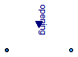

Extends from Modelica.Icons.VariantsPackage (Icon for package containing variants).
| Name | Description |
|---|---|
| ValveIncompressible | Valve for (almost) incompressible fluids |
| ValveVaporizing | Valve for possibly vaporizing (almost) incompressible fluids, accounts for choked flow conditions |
| ValveCompressible | Valve for compressible fluids, accounts for choked flow conditions |
| ValveLinear | Valve for water/steam flows with linear pressure drop |
| ValveDiscrete | Valve for water/steam flows with linear pressure drop |
| Base classes used in the Valves package (only of interest to build new component models) |
 Modelica.Fluid.Valves.ValveIncompressible
Modelica.Fluid.Valves.ValveIncompressible

Valve model according to the IEC 534/ISA S.75 standards for valve sizing, incompressible fluids.< /p>
The parameters of this model are explained in detail in PartialValve (the base model for valves).
This model assumes that the fluid has a low compressibility, which is always the case for liquids. It can also be used with gases, provided that the pressure drop is lower than 0.2 times the absolute pressure at the inlet, so that the fluid density does not change much inside the valve.
If checkValve is false, the valve supports reverse flow, with a symmetric flow characteric curve. Otherwise, reverse flow is stopped (check valve behaviour).
The treatment of parameters Kv and Cv is explained in detail in the User's Guide.
Extends from BaseClasses.PartialValve (Base model for valves).
| Type | Name | Default | Description |
|---|---|---|---|
| replaceable package Medium | PartialMedium | Medium in the component | |
| replaceable function valveCharacteristic | linear | Inherent flow characteristic | |
| Flow Coefficient | |||
| CvTypes | CvData | Modelica.Fluid.Types.CvTypes... | Selection of flow coefficient |
| Area | Av | 0 | Av (metric) flow coefficient [m2] |
| Real | Kv | 0 | Kv (metric) flow coefficient [m3/h] |
| Real | Cv | 0 | Cv (US) flow coefficient [USG/min] |
| Nominal operating point | |||
| Pressure | dp_nominal | Nominal pressure drop [Pa] | |
| MassFlowRate | m_flow_nominal | Nominal mass flowrate [kg/s] | |
| Density | rho_nominal | Medium.density_pTX(Medium.p_... | Nominal inlet density [kg/m3] |
| Real | opening_nominal | 1 | Nominal opening |
| Filtered opening | |||
| Boolean | filteredOpening | false | = true, if opening is filtered with a 2nd order CriticalDamping filter |
| Time | riseTime | 1 | Rise time of the filter (time to reach 99.6 % of an opening step) [s] |
| Real | leakageOpening | 1e-3 | The opening signal is limited by leakageOpening (to improve the numerics) |
| Assumptions | |||
| Boolean | allowFlowReversal | system.allowFlowReversal | = true to allow flow reversal, false restricts to design direction (port_a -> port_b) |
| Boolean | checkValve | false | Reverse flow stopped |
| Advanced | |||
| AbsolutePressure | dp_start | dp_nominal | Guess value of dp = port_a.p - port_b.p [Pa] |
| MassFlowRate | m_flow_start | m_flow_nominal | Guess value of m_flow = port_a.m_flow [kg/s] |
| MassFlowRate | m_flow_small | system.m_flow_small | Small mass flow rate for regularization of zero flow [kg/s] |
| Pressure | dp_small | system.dp_small | Regularisation of zero flow [Pa] |
| Diagnostics | |||
| Boolean | show_T | true | = true, if temperatures at port_a and port_b are computed |
| Boolean | show_V_flow | true | = true, if volume flow rate at inflowing port is computed |
| Type | Name | Description |
|---|---|---|
| FluidPort_a | port_a | Fluid connector a (positive design flow direction is from port_a to port_b) |
| FluidPort_b | port_b | Fluid connector b (positive design flow direction is from port_a to port_b) |
| input RealInput | opening | Valve position in the range 0..1 |
| output RealOutput | opening_filtered | Filtered valve position in the range 0..1 |
model ValveIncompressible "Valve for (almost) incompressible fluids"
extends BaseClasses.PartialValve;
import Modelica.Fluid.Types.CvTypes;
protected
Real relativeFlowCoefficient;
initial equation
if CvData == CvTypes.OpPoint then
m_flow_nominal = valveCharacteristic(opening_nominal)*Av*sqrt(rho_nominal)*Utilities.regRoot(dp_nominal, dp_small)
"Determination of Av by the operating point";
end if;
equation
// m_flow = valveCharacteristic(opening)*Av*sqrt(d)*sqrt(dp);
relativeFlowCoefficient = valveCharacteristic(opening_actual);
if checkValve then
m_flow = relativeFlowCoefficient*Av*sqrt(Medium.density(state_a))*
Modelica.Fluid.Utilities.regRoot2(dp,dp_small,1.0,0.0,use_yd0=true,yd0=0.0);
/* In Modelica 3.1 (Disadvantage: Unnecessary event at dp=0, and smooth=0, instead of smooth=2)
m_flow = valveCharacteristic(opening)*Av*sqrt(Medium.density(state_a))*
(if dp>=0 then Utilities.regRoot(dp, dp_small) else 0);
*/
elseif not allowFlowReversal then
m_flow = relativeFlowCoefficient*Av*sqrt(Medium.density(state_a))*
Utilities.regRoot(dp, dp_small);
else
m_flow = relativeFlowCoefficient*Av*
Modelica.Fluid.Utilities.regRoot2(dp,dp_small,Medium.density(state_a),Medium.density(state_b));
/* In Modelica 3.1 (Disadvantage: Unnecessary event at dp=0, and smooth=0, instead of smooth=2)
m_flow = smooth(0, Utilities.regRoot(dp, dp_small)*(if dp>=0 then sqrt(Medium.density(state_a)) else sqrt(Medium.density(state_b))));
*/
end if;
end ValveIncompressible;
Modelica.Fluid.Valves.ValveVaporizing
Valve model according to the IEC 534/ISA S.75 standards for valve sizing, incompressible fluid at the inlet, and possibly two-phase fluid at the outlet, including choked flow conditions.
The parameters of this model are explained in detail in PartialValve (the base model for valves).
The model operating range includes choked flow operation, which takes place for low outlet pressures due to flashing in the vena contracta; otherwise, non-choking conditions are assumed.
This model requires a two-phase medium model, to describe the liquid and (possible) two-phase conditions.
The default liquid pressure recovery coefficient Fl is constant and given by the parameter Fl_nominal. The relative change (per unit) of the recovery coefficient can be specified as a given function of the valve opening by replacing the FlCharacteristic function.
If checkValve is false, the valve supports reverse flow, with a symmetric flow characteric curve. Otherwise, reverse flow is stopped (check valve behaviour).
The treatment of parameters Kv and Cv is explained in detail in the User's Guide.
Extends from BaseClasses.PartialValve (Base model for valves).
| Type | Name | Default | Description |
|---|---|---|---|
| replaceable package Medium | PartialMedium | Medium in the component | |
| replaceable function valveCharacteristic | linear | Inherent flow characteristic | |
| Real | Fl_nominal | 0.9 | Liquid pressure recovery factor |
| replaceable function FlCharacteristic | Modelica.Fluid.Valves.BaseCl... | Pressure recovery characteristic | |
| Flow Coefficient | |||
| CvTypes | CvData | Modelica.Fluid.Types.CvTypes... | Selection of flow coefficient |
| Area | Av | 0 | Av (metric) flow coefficient [m2] |
| Real | Kv | 0 | Kv (metric) flow coefficient [m3/h] |
| Real | Cv | 0 | Cv (US) flow coefficient [USG/min] |
| Nominal operating point | |||
| Pressure | dp_nominal | Nominal pressure drop [Pa] | |
| MassFlowRate | m_flow_nominal | Nominal mass flowrate [kg/s] | |
| Density | rho_nominal | Medium.density_pTX(Medium.p_... | Nominal inlet density [kg/m3] |
| Real | opening_nominal | 1 | Nominal opening |
| Filtered opening | |||
| Boolean | filteredOpening | false | = true, if opening is filtered with a 2nd order CriticalDamping filter |
| Time | riseTime | 1 | Rise time of the filter (time to reach 99.6 % of an opening step) [s] |
| Real | leakageOpening | 1e-3 | The opening signal is limited by leakageOpening (to improve the numerics) |
| Assumptions | |||
| Boolean | allowFlowReversal | system.allowFlowReversal | = true to allow flow reversal, false restricts to design direction (port_a -> port_b) |
| Boolean | checkValve | false | Reverse flow stopped |
| Advanced | |||
| AbsolutePressure | dp_start | dp_nominal | Guess value of dp = port_a.p - port_b.p [Pa] |
| MassFlowRate | m_flow_start | m_flow_nominal | Guess value of m_flow = port_a.m_flow [kg/s] |
| MassFlowRate | m_flow_small | system.m_flow_small | Small mass flow rate for regularization of zero flow [kg/s] |
| Pressure | dp_small | system.dp_small | Regularisation of zero flow [Pa] |
| Diagnostics | |||
| Boolean | show_T | true | = true, if temperatures at port_a and port_b are computed |
| Boolean | show_V_flow | true | = true, if volume flow rate at inflowing port is computed |
| Type | Name | Description |
|---|---|---|
| replaceable package Medium | Medium in the component | |
| FluidPort_a | port_a | Fluid connector a (positive design flow direction is from port_a to port_b) |
| FluidPort_b | port_b | Fluid connector b (positive design flow direction is from port_a to port_b) |
| input RealInput | opening | Valve position in the range 0..1 |
| output RealOutput | opening_filtered | Filtered valve position in the range 0..1 |
| replaceable function FlCharacteristic | Pressure recovery characteristic | |
model ValveVaporizing
"Valve for possibly vaporizing (almost) incompressible fluids, accounts for choked flow conditions"
import Modelica.Fluid.Types.CvTypes;
extends BaseClasses.PartialValve(
redeclare replaceable package Medium =
Modelica.Media.Water.WaterIF97_ph constrainedby
Modelica.Media.Interfaces.PartialTwoPhaseMedium);
parameter Real Fl_nominal=0.9 "Liquid pressure recovery factor";
replaceable function FlCharacteristic =
Modelica.Fluid.Valves.BaseClasses.ValveCharacteristics.one
constrainedby
Modelica.Fluid.Valves.BaseClasses.ValveCharacteristics.baseFun
"Pressure recovery characteristic";
Real Ff "Ff coefficient (see IEC/ISA standard)";
Real Fl "Pressure recovery coefficient Fl (see IEC/ISA standard)";
SI.Pressure dpEff "Effective pressure drop";
Medium.Temperature T_in "Inlet temperature";
Medium.AbsolutePressure p_sat "Saturation pressure";
Medium.AbsolutePressure p_in "Inlet pressure";
Medium.AbsolutePressure p_out "Outlet pressure";
initial equation
assert(not CvData == CvTypes.OpPoint, "OpPoint option not supported for vaporizing valve");
equation
p_in = port_a.p;
p_out = port_b.p;
T_in = Medium.temperature(state_a);
p_sat = Medium.saturationPressure(T_in);
Ff = 0.96 - 0.28*sqrt(p_sat/Medium.fluidConstants[1].criticalPressure);
Fl = Fl_nominal*FlCharacteristic(opening_actual);
dpEff = if p_out < (1 - Fl^2)*p_in + Ff*Fl^2*p_sat then
Fl^2*(p_in - Ff*p_sat) else dp
"Effective pressure drop, accounting for possible choked conditions";
// m_flow = valveCharacteristic(opening)*Av*sqrt(d)*sqrt(dpEff);
if checkValve then
m_flow = valveCharacteristic(opening_actual)*Av*sqrt(Medium.density(state_a))*
Modelica.Fluid.Utilities.regRoot2(dpEff,dp_small,1.0,0.0,use_yd0=true,yd0=0.0);
/* In Modelica 3.1 (Disadvantage: Unnecessary event at dpEff=0, and smooth=0, instead of smooth=2)
m_flow = valveCharacteristic(opening)*Av*sqrt(Medium.density(state_a))*
(if dpEff>=0 then Utilities.regRoot(dpEff, dp_small) else 0);
*/
elseif not allowFlowReversal then
m_flow = valveCharacteristic(opening_actual)*Av*sqrt(Medium.density(state_a))*
Utilities.regRoot(dpEff, dp_small);
else
m_flow = valveCharacteristic(opening_actual)*Av*
Modelica.Fluid.Utilities.regRoot2(dpEff,dp_small,Medium.density(state_a),Medium.density(state_b));
/* In Modelica 3.1 (Disadvantage: Unnecessary event at dp=0, and smooth=0, instead of smooth=2)
m_flow = valveCharacteristic(opening)*Av*
smooth(0, Utilities.regRoot(dpEff, dp_small)*(if dpEff>=0 then sqrt(Medium.density(state_a)) else sqrt(Medium.density(state_b))));
*/
end if;
end ValveVaporizing;
Modelica.Fluid.Valves.ValveCompressible
Valve model according to the IEC 534/ISA S.75 standards for valve sizing, compressible fluid, no phase change, also covering choked-flow conditions.
The parameters of this model are explained in detail in PartialValve (the base model for valves).
This model can be used with gases and vapours, with arbitrary pressure ratio between inlet and outlet.
The product Fk*xt is given by the parameter Fxt_full, and is assumed constant by default. The relative change (per unit) of the xt coefficient with the valve opening can be specified by replacing the xtCharacteristic function.
If checkValve is false, the valve supports reverse flow, with a symmetric flow characteric curve. Otherwise, reverse flow is stopped (check valve behaviour).
The treatment of parameters Kv and Cv is explained in detail in the User's Guide.
Extends from BaseClasses.PartialValve (Base model for valves).
| Type | Name | Default | Description |
|---|---|---|---|
| replaceable package Medium | PartialMedium | Medium in the component | |
| replaceable function valveCharacteristic | linear | Inherent flow characteristic | |
| Real | Fxt_full | 0.5 | Fk*xt critical ratio at full opening |
| replaceable function xtCharacteristic | Modelica.Fluid.Valves.BaseCl... | Critical ratio characteristic | |
| Flow Coefficient | |||
| CvTypes | CvData | Modelica.Fluid.Types.CvTypes... | Selection of flow coefficient |
| Area | Av | 0 | Av (metric) flow coefficient [m2] |
| Real | Kv | 0 | Kv (metric) flow coefficient [m3/h] |
| Real | Cv | 0 | Cv (US) flow coefficient [USG/min] |
| Nominal operating point | |||
| Pressure | dp_nominal | Nominal pressure drop [Pa] | |
| MassFlowRate | m_flow_nominal | Nominal mass flowrate [kg/s] | |
| Density | rho_nominal | Medium.density_pTX(Medium.p_... | Nominal inlet density [kg/m3] |
| Real | opening_nominal | 1 | Nominal opening |
| AbsolutePressure | p_nominal | Nominal inlet pressure [Pa] | |
| Filtered opening | |||
| Boolean | filteredOpening | false | = true, if opening is filtered with a 2nd order CriticalDamping filter |
| Time | riseTime | 1 | Rise time of the filter (time to reach 99.6 % of an opening step) [s] |
| Real | leakageOpening | 1e-3 | The opening signal is limited by leakageOpening (to improve the numerics) |
| Assumptions | |||
| Boolean | allowFlowReversal | system.allowFlowReversal | = true to allow flow reversal, false restricts to design direction (port_a -> port_b) |
| Boolean | checkValve | false | Reverse flow stopped |
| Advanced | |||
| AbsolutePressure | dp_start | dp_nominal | Guess value of dp = port_a.p - port_b.p [Pa] |
| MassFlowRate | m_flow_start | m_flow_nominal | Guess value of m_flow = port_a.m_flow [kg/s] |
| MassFlowRate | m_flow_small | system.m_flow_small | Small mass flow rate for regularization of zero flow [kg/s] |
| Pressure | dp_small | system.dp_small | Regularisation of zero flow [Pa] |
| Diagnostics | |||
| Boolean | show_T | true | = true, if temperatures at port_a and port_b are computed |
| Boolean | show_V_flow | true | = true, if volume flow rate at inflowing port is computed |
| Type | Name | Description |
|---|---|---|
| FluidPort_a | port_a | Fluid connector a (positive design flow direction is from port_a to port_b) |
| FluidPort_b | port_b | Fluid connector b (positive design flow direction is from port_a to port_b) |
| input RealInput | opening | Valve position in the range 0..1 |
| output RealOutput | opening_filtered | Filtered valve position in the range 0..1 |
| replaceable function xtCharacteristic | Critical ratio characteristic | |
model ValveCompressible
"Valve for compressible fluids, accounts for choked flow conditions"
extends BaseClasses.PartialValve;
import Modelica.Fluid.Types.CvTypes;
parameter Medium.AbsolutePressure p_nominal "Nominal inlet pressure";
parameter Real Fxt_full=0.5 "Fk*xt critical ratio at full opening";
replaceable function xtCharacteristic =
Modelica.Fluid.Valves.BaseClasses.ValveCharacteristics.one
constrainedby
Modelica.Fluid.Valves.BaseClasses.ValveCharacteristics.baseFun
"Critical ratio characteristic";
Real Fxt;
Real x "Pressure drop ratio";
Real xs "Saturated pressure drop ratio";
Real Y "Compressibility factor";
Medium.AbsolutePressure p "Inlet pressure";
protected
parameter Real Fxt_nominal(fixed=false) "Nominal Fxt";
parameter Real x_nominal(fixed=false) "Nominal pressure drop ratio";
parameter Real xs_nominal(fixed=false)
"Nominal saturated pressure drop ratio";
parameter Real Y_nominal(fixed=false) "Nominal compressibility factor";
initial equation
if CvData == CvTypes.OpPoint then
// Determination of Av by the nominal operating point conditions
Fxt_nominal = Fxt_full*xtCharacteristic(opening_nominal);
x_nominal = dp_nominal/p_nominal;
xs_nominal = smooth(0, if x_nominal > Fxt_nominal then Fxt_nominal else x_nominal);
Y_nominal = 1 - abs(xs_nominal)/(3*Fxt_nominal);
m_flow_nominal = valveCharacteristic(opening_nominal)*Av*Y_nominal*sqrt(rho_nominal)*Utilities.regRoot(p_nominal*xs_nominal, dp_small);
else
// Dummy values
Fxt_nominal = 0;
x_nominal = 0;
xs_nominal = 0;
Y_nominal = 0;
end if;
equation
p = noEvent(if dp>=0 then port_a.p else port_b.p);
Fxt = Fxt_full*xtCharacteristic(opening_actual);
x = dp/p;
xs = smooth(0, if x < -Fxt then -Fxt else if x > Fxt then Fxt else x);
Y = 1 - abs(xs)/(3*Fxt);
// m_flow = valveCharacteristic(opening)*Av*Y*sqrt(d)*sqrt(p*xs);
if checkValve then
m_flow = valveCharacteristic(opening_actual)*Av*Y*sqrt(Medium.density(state_a))*
(if xs>=0 then Utilities.regRoot(p*xs, dp_small) else 0);
elseif not allowFlowReversal then
m_flow = valveCharacteristic(opening_actual)*Av*sqrt(Medium.density(state_a))*
Utilities.regRoot(p*xs, dp_small);
else
m_flow = valveCharacteristic(opening_actual)*Av*Y*
smooth(0, Utilities.regRoot(p*xs, dp_small)*(if xs>=0 then sqrt(Medium.density(state_a)) else sqrt(Medium.density(state_b))));
/*
m_flow = valveCharacteristic(opening)*Av*Y*
Modelica.Fluid.Utilities.regRoot2(p*xs, dp_small, Medium.density(state_a), Medium.density(state_b));
*/
end if;
end ValveCompressible;
 Modelica.Fluid.Valves.ValveLinear
Modelica.Fluid.Valves.ValveLinear
This very simple model provides a pressure drop which is proportional to the flowrate and to the opening input, without computing any fluid property. It can be used for testing purposes, when
a simple model of a variable pressure loss is needed.
A medium model must be nevertheless be specified, so that the fluid ports can be connected to other components using the same medium model.
The model is adiabatic (no heat losses to the ambient) and neglects changes in kinetic energy from the inlet to the outlet.
Extends from Modelica.Fluid.Interfaces.PartialTwoPortTransport (Partial element transporting fluid between two ports without storage of mass or energy).
| Type | Name | Default | Description |
|---|---|---|---|
| replaceable package Medium | PartialMedium | Medium in the component | |
| AbsolutePressure | dp_nominal | Nominal pressure drop at full opening [Pa] | |
| MassFlowRate | m_flow_nominal | Nominal mass flowrate at full opening [kg/s] | |
| Assumptions | |||
| Boolean | allowFlowReversal | system.allowFlowReversal | = true to allow flow reversal, false restricts to design direction (port_a -> port_b) |
| Advanced | |||
| AbsolutePressure | dp_start | 0.01*system.p_start | Guess value of dp = port_a.p - port_b.p [Pa] |
| MassFlowRate | m_flow_start | system.m_flow_start | Guess value of m_flow = port_a.m_flow [kg/s] |
| MassFlowRate | m_flow_small | system.m_flow_small | Small mass flow rate for regularization of zero flow [kg/s] |
| Diagnostics | |||
| Boolean | show_T | true | = true, if temperatures at port_a and port_b are computed |
| Boolean | show_V_flow | true | = true, if volume flow rate at inflowing port is computed |
| Type | Name | Description |
|---|---|---|
| FluidPort_a | port_a | Fluid connector a (positive design flow direction is from port_a to port_b) |
| FluidPort_b | port_b | Fluid connector b (positive design flow direction is from port_a to port_b) |
| input RealInput | opening | =1: completely open, =0: completely closed |
model ValveLinear
"Valve for water/steam flows with linear pressure drop"
extends Modelica.Fluid.Interfaces.PartialTwoPortTransport;
parameter SI.AbsolutePressure dp_nominal
"Nominal pressure drop at full opening";
parameter Medium.MassFlowRate m_flow_nominal
"Nominal mass flowrate at full opening";
final parameter Types.HydraulicConductance k = m_flow_nominal/dp_nominal
"Hydraulic conductance at full opening";
Modelica.Blocks.Interfaces.RealInput opening(min=0,max=1)
"=1: completely open, =0: completely closed";
equation
m_flow = opening*k*dp;
// Isenthalpic state transformation (no storage and no loss of energy)
port_a.h_outflow = inStream(port_b.h_outflow);
port_b.h_outflow = inStream(port_a.h_outflow);
end ValveLinear;
This very simple model provides a (small) pressure drop which is proportional to the flowrate if the Boolean open signal is true. Otherwise, the mass flow rate is zero. If opening_min > 0, a small leakage mass flow rate occurs when open = false.
This model can be used for simplified modelling of on-off valves, when it is not important to accurately describe the pressure loss when the valve is open. Although the medium model is not used to determine the pressure loss, it must be nevertheless be specified, so that the fluid ports can be connected to other components using the same medium model.
The model is adiabatic (no heat losses to the ambient) and neglects changes in kinetic energy from the inlet to the outlet.
In a diagram animation, the valve is shown in "green", when it is open.
Extends from Modelica.Fluid.Interfaces.PartialTwoPortTransport (Partial element transporting fluid between two ports without storage of mass or energy).
| Type | Name | Default | Description |
|---|---|---|---|
| replaceable package Medium | PartialMedium | Medium in the component | |
| Pressure | dp_nominal | Nominal pressure drop at full opening=1 [Pa] | |
| MassFlowRate | m_flow_nominal | Nominal mass flowrate at full opening=1 [kg/s] | |
| Real | opening_min | 0 | Remaining opening if closed, causing small leakage flow |
| Assumptions | |||
| Boolean | allowFlowReversal | system.allowFlowReversal | = true to allow flow reversal, false restricts to design direction (port_a -> port_b) |
| Advanced | |||
| AbsolutePressure | dp_start | 0.01*system.p_start | Guess value of dp = port_a.p - port_b.p [Pa] |
| MassFlowRate | m_flow_start | system.m_flow_start | Guess value of m_flow = port_a.m_flow [kg/s] |
| MassFlowRate | m_flow_small | system.m_flow_small | Small mass flow rate for regularization of zero flow [kg/s] |
| Diagnostics | |||
| Boolean | show_T | true | = true, if temperatures at port_a and port_b are computed |
| Boolean | show_V_flow | true | = true, if volume flow rate at inflowing port is computed |
| Type | Name | Description |
|---|---|---|
| FluidPort_a | port_a | Fluid connector a (positive design flow direction is from port_a to port_b) |
| FluidPort_b | port_b | Fluid connector b (positive design flow direction is from port_a to port_b) |
| input BooleanInput | open |
model ValveDiscrete
"Valve for water/steam flows with linear pressure drop"
extends Modelica.Fluid.Interfaces.PartialTwoPortTransport;
parameter SI.Pressure dp_nominal "Nominal pressure drop at full opening=1";
parameter Medium.MassFlowRate m_flow_nominal
"Nominal mass flowrate at full opening=1";
final parameter Types.HydraulicConductance k = m_flow_nominal/dp_nominal
"Hydraulic conductance at full opening=1";
Modelica.Blocks.Interfaces.BooleanInput open;
parameter Real opening_min(min=0)=0
"Remaining opening if closed, causing small leakage flow";
equation
m_flow = if open then 1*k*dp else opening_min*k*dp;
// Isenthalpic state transformation (no storage and no loss of energy)
port_a.h_outflow = inStream(port_b.h_outflow);
port_b.h_outflow = inStream(port_a.h_outflow);
end ValveDiscrete;